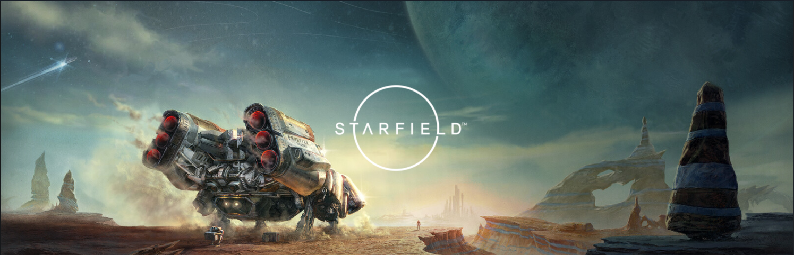

STARFIELD
『Starfield（スターフィールド）』は、Bethesda Game Studiosが手がけた完全新規IPのSFアクションRPGで、「宇宙を舞台にしたSkyrim」とも称されるほどの壮大なスケールを持つ作品です。本作は、人類が宇宙へ進出した未来を舞台に、プレイヤーが一人の探検家として銀河を旅し、さまざまな惑星や勢力、物語に関わっていくゲームです。
最大の特徴は、その圧倒的な自由度です。プレイヤーはメインストーリーを進めるだけでなく、複数の派閥に所属して独自のストーリーを体験したり、惑星を探索して資源を集めたり、拠点や宇宙船を自分好みにカスタマイズしたりと、遊び方を自由に選択できます。宇宙船の設計は特に評価が高く、パーツを組み替えることで見た目だけでなく性能も変化し、自分だけの宇宙船を作り上げる楽しさがあります。また、宇宙や惑星の景観は美しく、SF作品らしいロマンや雰囲気を強く感じられる点も魅力の一つです。
一方で、欠点も少なからずあります。多くの惑星は手続き生成によって作られているため、探索しているうちに地形や施設の構造が似通って感じられ、単調さを覚えることがあるかもしれません。また、惑星への着陸や建物の出入りなどでロード画面が頻繁に挟まるため、広大な宇宙を自由に旅しているという没入感がやや損なわれています。戦闘面においても、地上戦・宇宙戦ともに無難な出来ではあるが、爽快感や緊張感に欠けると感じるプレイヤーも多いです。
総合的に見ると、『Starfield』は壮大な世界観と自由度の高さを重視したSF RPGであり、Bethesda作品が好きな人や、宇宙探索やクラフト要素をじっくり楽しみたい人には向いています。一方で、緻密なストーリー展開やテンポの良い探索、強い没入感を求める人には物足りなさを感じる可能性がある作品でもあります。完璧ではないが、広大な宇宙にロマンを感じ、自分のペースで世界を旅したいプレイヤーにとっては、長く遊べる魅力を持った一本だ思います。